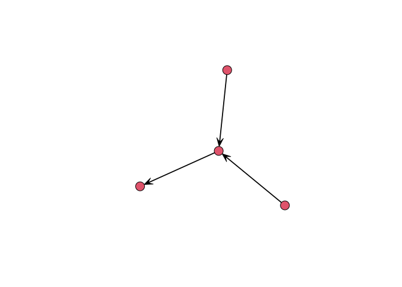
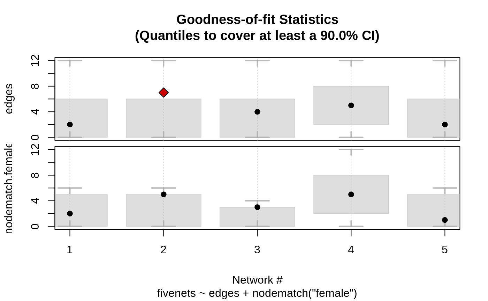

This R package, which has been developed on top of the amazing work that the Statnet team has done, implements estimation and simulation methods for Exponential Random Graph Models of small networks, in particular, less than 7 nodes. In the case of small networks, the calculation of the likelihood of ERGMs becomes computationally feasible, which allows us avoiding approximations and do exact calculation, ultimately obtaining MLEs directly.
Support
This material is based upon work support by, or in part by, the U.S. Army Research Laboratory and the U.S. Army Research Office under grant number W911NF-15-1-0577
Computation for the work described in this paper was supported by the University of Southern California’s Center for High-Performance Computing (hpcc.usc.edu).
Citation
Vega Yon G (2020). ergmito: Exponential Random Graph Models for Small Networks. R package version 0.2-999, <URL: https://github.com/muriteams/ergmito>.
Vega Yon G, Slaughter A, de la Haye K (2019). “Exponential Random Graph models for Little Networks.” arXiv:1904.10406.
To see these entries in BibTeX format, use ‘print(
Installation
The development version from GitHub with:
This requires compilation. Windows users can download the latest compiled version from appveyor here. The file to download is the one named ergmito_[version number].zip. Once downloaded, you can install typing the following:
In the case of Mac users, and in particular, those with Mojave version, they may need to install the following https://github.com/fxcoudert/gfortran-for-macOS/releases
Example
In the following example we simulate a small network with 4 vertices and estimate the model parameters using ergm and ergmito. We start by generating the graph
# Generating a small graph
library(ergmito)
library(ergm)
library(sna)
set.seed(12123)
n <- 4
net <- rbernoulli(n, p = .3)
gplot(net)
To estimate the model
# ERGM (estimation via MC-MLE)
ans_ergm <- ergm(model, control = control.ergm(
MCMC.effectiveSize = 4000,
seed = 444)
)
# The ergmito should have a larger value
ergm.exact(ans_ergmito$coef, model) > ergm.exact(ans_ergm$coef, model)
#> [,1]
#> [1,] TRUE
summary(ans_ergmito)
#>
#> ERGMito estimates
#>
#> formula: net ~ edges + istar(2)
#>
#> Estimate Std. Error z value Pr(>|z|)
#> edges -1.37749 1.00260 -1.3739 0.1695
#> istar2 0.50653 1.32701 0.3817 0.7027
#> AIC: 17.36312 BIC: 18.33294 (Smaller is better.)
summary(ans_ergm)
#>
#> ==========================
#> Summary of model fit
#> ==========================
#>
#> Formula: net ~ edges + istar(2)
#>
#> Iterations: 2 out of 20
#>
#> Monte Carlo MLE Results:
#> Estimate Std. Error MCMC % z value Pr(>|z|)
#> edges -1.4110 0.9995 0 -1.412 0.158
#> istar2 0.5607 1.3719 0 0.409 0.683
#>
#> Null Deviance: 16.64 on 12 degrees of freedom
#> Residual Deviance: 13.35 on 10 degrees of freedom
#>
#> AIC: 17.35 BIC: 18.32 (Smaller is better.)Estimating data with known parameters
The following example shows the estimation of a dataset that is included in the package, fivenets. This set of five networks was generated using the new_rergmito function which allows creating a function to draw random ERGMs with a fixed set of parameters, in this case, edges = -2.0 and nodematch("female") = 2.0
data(fivenets)
model1 <- ergmito(fivenets ~ edges + nodematch("female"))
summary(model1) # This data has know parameters equal to -2.0 and 2.0
#>
#> ERGMito estimates
#>
#> formula: fivenets ~ edges + nodematch("female")
#>
#> Estimate Std. Error z value Pr(>|z|)
#> edges -1.70475 0.54356 -3.1363 0.001711 **
#> nodematch.female 1.58697 0.64305 2.4679 0.013592 *
#> ---
#> Signif. codes: 0 '***' 0.001 '**' 0.01 '*' 0.05 '.' 0.1 ' ' 1
#> AIC: 73.34109 BIC: 77.52978 (Smaller is better.)We can also compute GOF
fivenets_gof <- gof_ergmito(model1)
fivenets_gof
#>
#> Goodness-of-fit for edges
#>
#> obs min mean max lower upper lower prob. upper prob.
#> net 1 2 0 3.7 12 0 6 0.0081 0.96
#> net 2 7 0 3.7 12 0 6 0.0081 0.96
#> net 3 4 0 3.1 12 0 6 0.0206 0.99
#> net 4 5 0 5.6 12 2 8 0.0309 0.95
#> net 5 2 0 3.7 12 0 6 0.0081 0.96
#>
#>
#> Goodness-of-fit for nodematch.female
#>
#> obs min mean max lower upper lower prob. upper prob.
#> net 1 2 0 2.8 6 0 5 0.022 0.99
#> net 2 5 0 2.8 6 0 5 0.022 0.99
#> net 3 3 0 1.9 4 0 3 0.079 0.95
#> net 4 5 0 5.6 12 2 8 0.031 0.95
#> net 5 1 0 2.8 6 0 5 0.022 0.99
#>
#> Note: Exact confidence intervals where used. This implies that the requestes CI may differ from the one used (see ?gof_ergmito).
plot(fivenets_gof)
Fitting block-diagonal models
The pooled model can be also compared to a block-diagonal ERGM. The package includes three functions to help with this task: blockdiagonalize, splitnetwork, and ergm_blockdiag.
data("fivenets")
# Stacking matrices together
fivenets_blockdiag <- blockdiagonalize(fivenets, "block_id")
fivenets_blockdiag # It creates the 'block_id' variable
#> Network attributes:
#> vertices = 20
#> directed = TRUE
#> hyper = FALSE
#> loops = FALSE
#> multiple = FALSE
#> bipartite = FALSE
#> total edges= 20
#> missing edges= 0
#> non-missing edges= 20
#>
#> Vertex attribute names:
#> block_id female name_original vertex.names
#>
#> No edge attributes# Fitting the model with ERGM
ans0 <- ergm(
fivenets_blockdiag ~ edges + nodematch("female"),
constraints = ~ blockdiag("block_id")
)# Now with ergmito
ans2 <- ergmito(fivenets ~ edges + nodematch("female"))
# All three are equivalent
cbind(
ergm = coef(ans0),
ergm_blockdiag = coef(ans1),
ergmito = coef(ans2)
)
#> ergm ergm_blockdiag ergmito
#> edges -1.704748 -1.704748 -1.704748
#> nodematch.female 1.586965 1.586965 1.586965The benefit of ergmito:
Fitting a large model
Suppose that we have a large sample of small networks (ego from Facebook, Twitter, etc.), 20,000 which account for 80,000 vertices:
set.seed(123)
bignet <- rbernoulli(sample(3:5, 20000, replace = TRUE))
# Number of vertices
sum(nvertex(bignet))
#> [1] 80089We can fit this model in a memory efficient way.
system.time(ans0 <- ergmito(bignet ~ edges + mutual))
#> user system elapsed
#> 8.208 0.037 8.251
summary(ans0)
#>
#> ERGMito estimates
#>
#> formula: bignet ~ edges + mutual
#>
#> Estimate Std. Error z value Pr(>|z|)
#> edges -0.0021702 0.0068674 -0.3160 0.752
#> mutual -0.0015521 0.0112247 -0.1383 0.890
#> AIC: 352097.2 BIC: 352118.1 (Smaller is better.)Contributing
Please note that the ‘ergmito’ project is released with a Contributor Code of Conduct. By contributing to this project, you agree to abide by its terms.